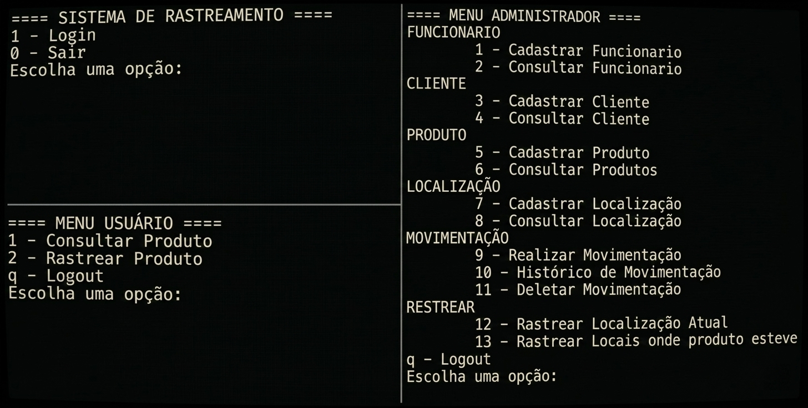

Alexandre Lima André
Data Scientist em Formação
Data Scientist em Formação
Sou estudante de Big Data para Negócios pela FATEC Ipiranga e técnico formado em Desenvolvimento de Sistemas pela ETEC Juscelino Kubitschek de Oliveira.
Minha formação combina desenvolvimento de software e análise de dados, com experiência em projetos de modelagem de banco de dados, criação de dashboards e desenvolvimento de sistemas.
Tenho perfil analítico, organizado e facilidade para aprender novas tecnologias. Busco oportunidade de estágio para aplicar e expandir meus conhecimentos na área de dados e desenvolvimento.
Aplicativo mobile desenvolvido com React Native que permite a criação de listas de compras personalizadas e o acompanhamento dos gastos do usuário. A aplicação inclui gráficos de análise financeira, possibilitando visualizar o retorno e a evolução dos gastos ao longo do tempo, auxiliando na organização do orçamento pessoal.

Sistema desenvolvido para rastrear produtos e registrar o histórico de movimentações entre diferentes localizações. Permite cadastrar funcionários, clientes, produtos e locais, além de consultar a posição atual e o histórico completo de cada item. O sistema é executado via terminal e pode ser aplicado em comércio, logística e varejo para melhorar o controle e a rastreabilidade de produtos.